Preparing the local detection engine
One or more reference lengths exceed the legend width. Zoom out to see them in full.
Opening another image will clear all detected particles, manual corrections, scale settings, and selections. Export anything you need first.